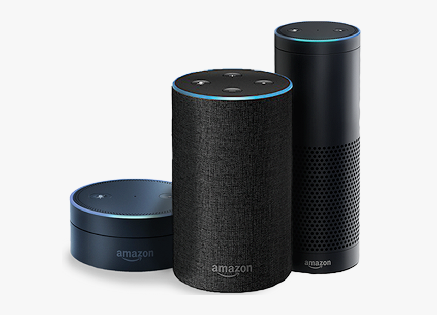
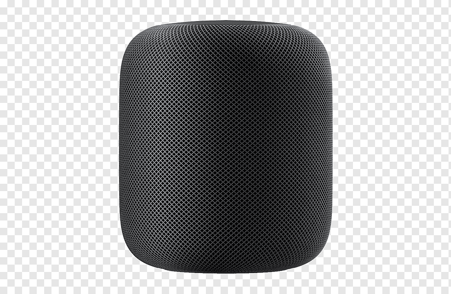
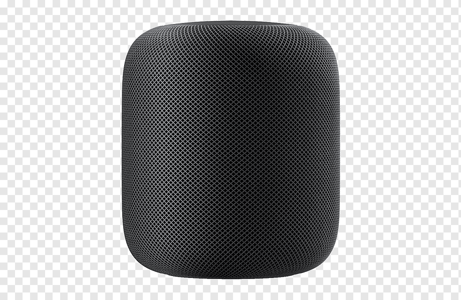
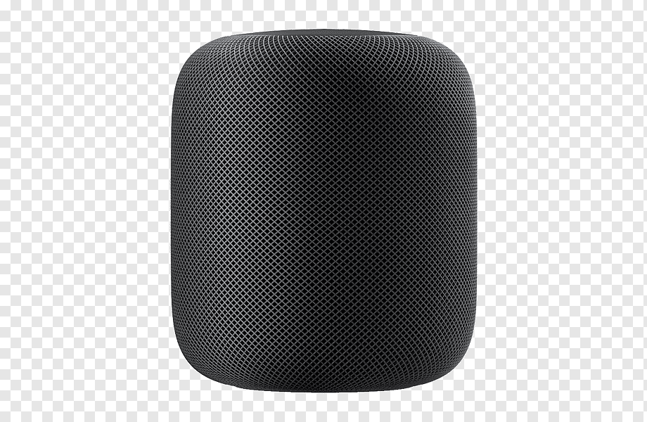

Zvucnici su ostali skoro nepremenjeni jos od kad su nastali 1925. godine.
Veoma proste gradje napravljeni od par delova, jedina promena do 2014 je
bila u kvalitetu zvuka i velicini drajvera. Pametni zvucnik je svoj debi
napravio 2014. godine i od tad se industrija znatno promenila.
•Amazon alexa
Amazon Alexa je tehnologija koju koriste Amazonovi pametni zvučnici od kojihje prvi
Amazon Echo(2014). Ovakvim zvučnikom je optimalno uppravljati glasovnim komandama.
Mnogi pametni zvucnici imaju takozvanu "Reč za buđenje" u slučaju Amazon Alexe
to je "Alexa", dok guglovi zvucinic koriste "Hej google". Ovi zvučnici imaju
brojne mogucnosti poput:
1.Automacije kuće2.Naručivanja stvari sa interneta3.Pustanje muzike4.Primanje i slanje poruka i poziva5.Trenutne dojave o saobraćajuitd

Neki od najboljih pametnih zvucnika su:
Amazon EchoGoogle nestApple homepod mini
•Sigurnosni problemi
Kada su konfigurisani bez autentifikacije, pametne zvučnike mogu da aktiviraju ljudi
koji nisu predviđeni korisnik ili vlasnik. Na primer, zvučnik može da čuje posetioce
kuće ili kancelarije ili ljude ispred otvorenog prozora, delimičnog zida ili
bezbednosne ograde. Jedan tim je pokazao sposobnost da stimuliše mikrofone
pametnih zvučnika i pametnih telefona kroz zatvoren prozor.
 Amazon Alexa je tehnologija koju koriste Amazonovi pametni zvučnici od kojihje prvi
Amazon Echo(2014). Ovakvim zvučnikom je optimalno uppravljati glasovnim komandama.
Mnogi pametni zvucnici imaju takozvanu "Reč za buđenje" u slučaju Amazon Alexe
to je "Alexa", dok guglovi zvucinic koriste "Hej google". Ovi zvučnici imaju
brojne mogucnosti poput:
1.Automacije kuće
2.Naručivanja stvari sa interneta
3.Pustanje muzike
4.Primanje i slanje poruka i poziva
5.Trenutne dojave o saobraćaju
itd

Neki od najboljih pametnih zvucnika su:
Amazon Echo
Google nest
Apple homepod mini
Amazon Alexa je tehnologija koju koriste Amazonovi pametni zvučnici od kojihje prvi
Amazon Echo(2014). Ovakvim zvučnikom je optimalno uppravljati glasovnim komandama.
Mnogi pametni zvucnici imaju takozvanu "Reč za buđenje" u slučaju Amazon Alexe
to je "Alexa", dok guglovi zvucinic koriste "Hej google". Ovi zvučnici imaju
brojne mogucnosti poput:
1.Automacije kuće
2.Naručivanja stvari sa interneta
3.Pustanje muzike
4.Primanje i slanje poruka i poziva
5.Trenutne dojave o saobraćaju
itd

Neki od najboljih pametnih zvucnika su:
Amazon Echo
Google nest
Apple homepod mini